Removing Labels - Examples
From Audacity Manual
| (shortcut CTRL + K), (shortcut CTRL + ALT + K) or their Cut/Split Cut alternatives cannot be used to remove point labels because there is no audio region associated with them. |
Delete Label
The simplest way to delete a single label is to right-click inside the label's text box, then choose Delete Label from the dropdown menu. Any labels lying to right of the removed labels stay where they are, still associated with their original audio.
- 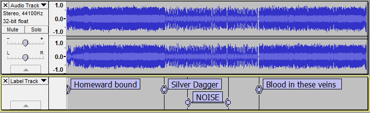
Right-click in the label's text box to show the label dropdown menu.
{kind=link}
Choose Delete Label and the label will be removed, leaving any following labels in their original place.
- 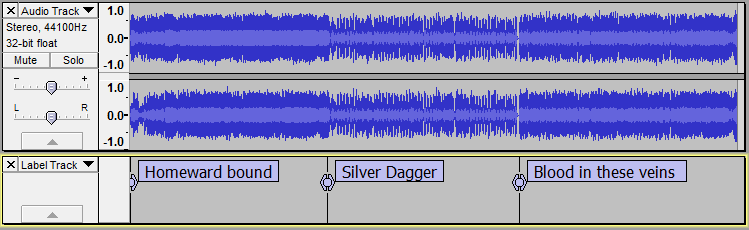
Removing labels without moving any following labels (Split method)
You can use this method to remove single or multiple labels, without removing their associated audio, by split deleting a region in the label track. This method keeps the remaining labels synchronized with their audio.
- 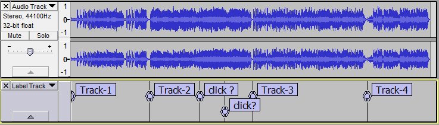
Select in the label track around the two labels to be removed. Only drag horizontally, so as to avoid extending the selection up into the audio track.
- 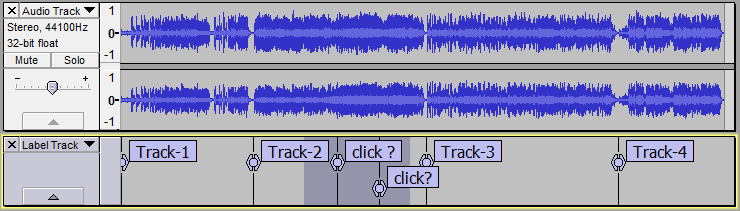
Use or its keyboard shortcut CTRL + ALT + K. The two labels are removed and the labels for Track-3 and Track-4 remain where they were previously. Note that the selection remains after performing this split delete in the label track.
- 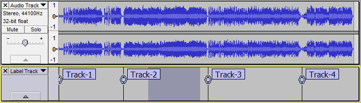
Label text removal method
You can use this method to remove a single label, all remaining labels remain synchronized with their audio.
Open the label by clicking in its text box, remove the text then press Backspace or Delete once to remove the empty label. This can be achieved in several ways, for example:
- Single-click before the first character in the label text (or click anywhere in the text then press Home), then press the Delete key until the text is removed, then press Delete once more.
- Single-click before the first character in the label text (or click anywhere in the text then press Home), then hold Shift and press End. Now press Delete twice.
- Single-click anywhere after the first character in the label text, then use first Backspace then Delete if needed until the text and label are removed.
Removing labels (or regions of label track), moving back any following labels (Delete method)
You can use this method to remove labels or regions between labels, moving back (leftwards) any following labels. If you only remove the labels without also deleting the same region in the audio track Delete will desynchronize the following labels with their audio.
- 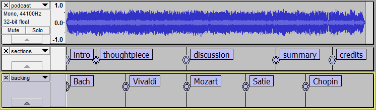
Select in the label track over the label to be removed. Only drag horizontally, so as to avoid extending the selection up into the audio track or the other label track. The labels following the removed label will move back by the length of region removed from the label track. It doesn't matter exactly where that region starts and ends, providing the selected length is correct and providing we select over the "Vivaldi" label point but don't let the selection touch the "Mozart" label.
- 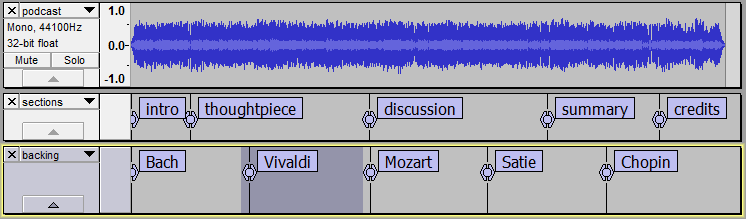
Use or its shortcut CTRL + K to delete the selected part of the label track, moving back the following labels accordingly.
- 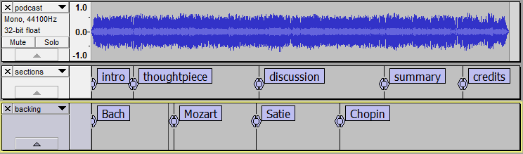
Removing labels together with their associated audio
In most cases when you remove parts of the label track, you will also want to remove the corresponding audio so that the remaining labels are still synchronized with their original audio. For example, you may have labeled a region of noisy audio for later deletion, as in the example below where there is a section of a performance with clapping.
- 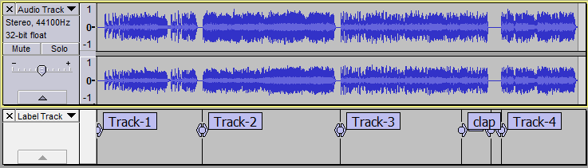
Select in the audio track from one edge of the label to the other then drag down into the label track, or simply click in the text of the "clap" label.
- 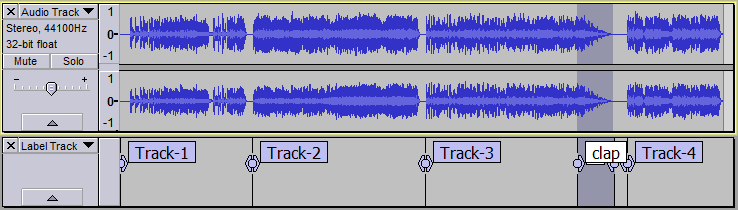
Then use or its shortcut CTRL + K to make the deletion. As you can see, the label for Track-4 and its audio both move back (leftwards) on the Timeline thus keeping the label for Track-4 at the start of that track. If you already had the labeled audio selected on its own, you could equally have dragged either edge of that selection down into the label track.
- 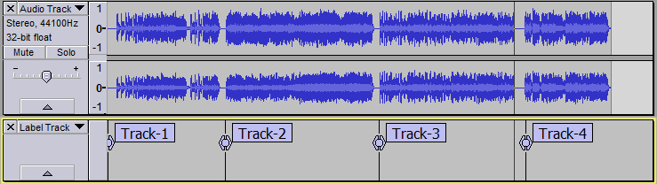